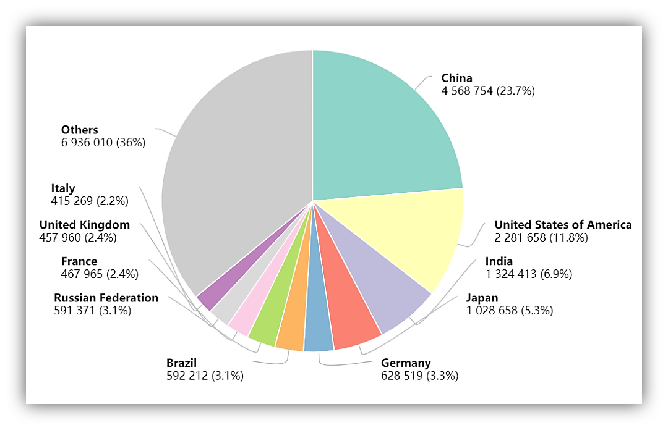
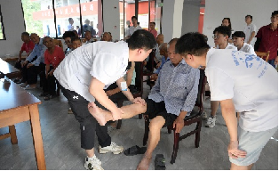
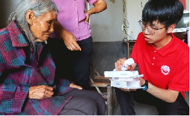
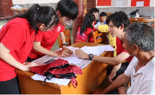

我国肿瘤防控形势严峻，然而在患者与医生之间，存在着一条由专业壁垒、时间精力、传播障碍构成的巨大信息鸿沟。
中国新发癌症病例数与死亡人数均位居全球第一 。在2022年，全国新发癌症病例高达482.47万人，即平均每日新发1.32万人。严峻的疾病负担下，权威、有效、易懂的科普知识显得尤为重要，但传统模式却步履维艰。


医学术语晦涩，患者也无法准确理解病情及治疗方案，对话常常失焦

面对疾病时普遍感到恐惧和焦虑，缺少个性化、易懂的知识支持，常常陷入孤立

传统科普依赖静态图文和讲座，形式固化，难以覆盖广大且有不同需求的患者人群
临床与科研负担沉重，超负荷工作使科普任务常常被边缘化
医生群体普遍缺乏新媒体运营、短视频制作等技能，难以将专业知识转化为大众喜闻乐见的形式
大量前沿研究成果停留在学术论文中，缺乏快速面向公众转化的有效机制
面对重重困境，「智瘤方舟」应运而生。我们相信，AI是连接权威医学与大众需求的最佳桥梁